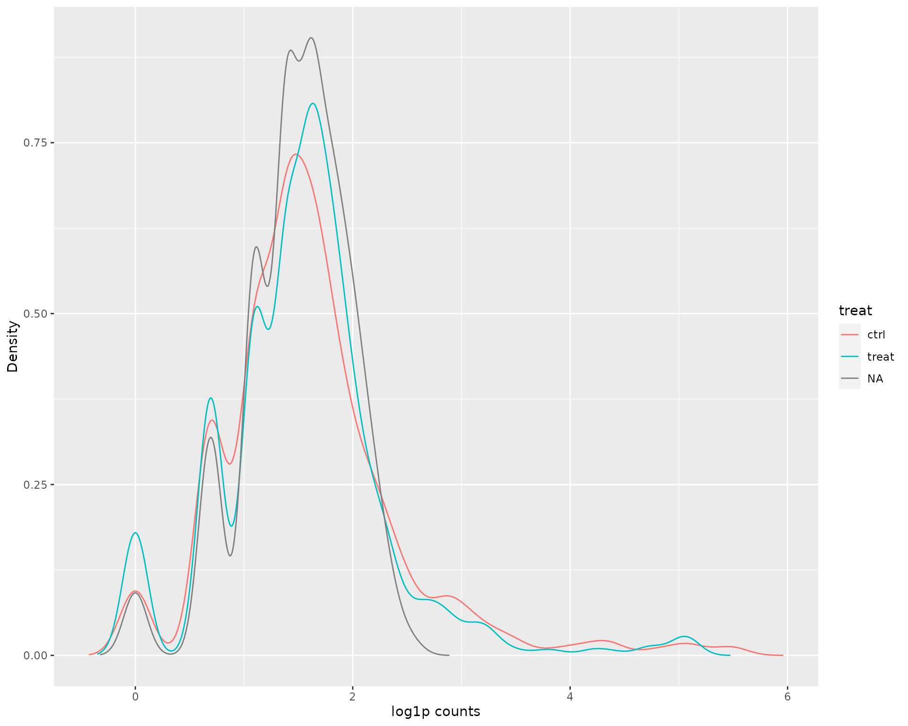
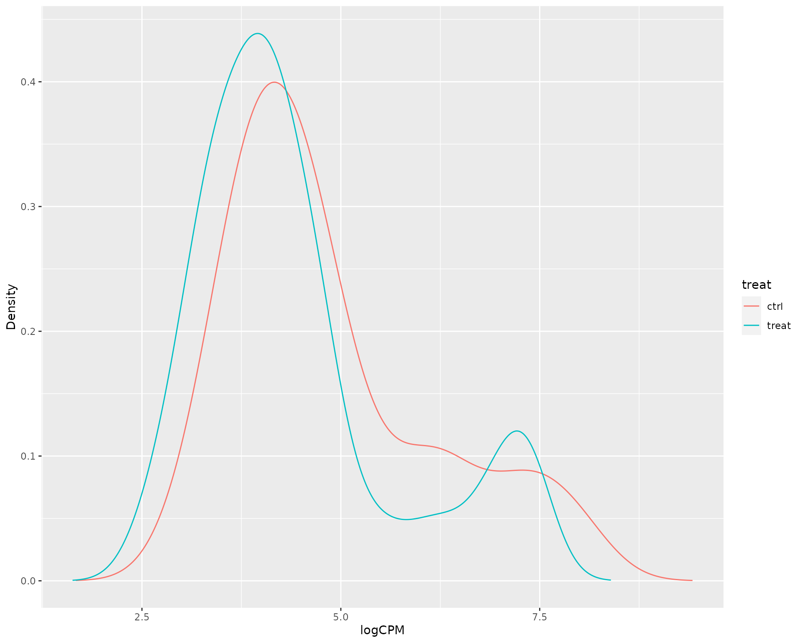
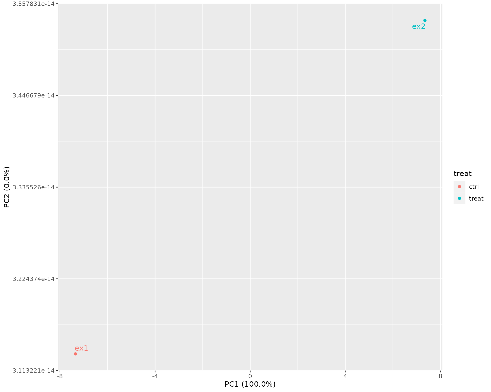
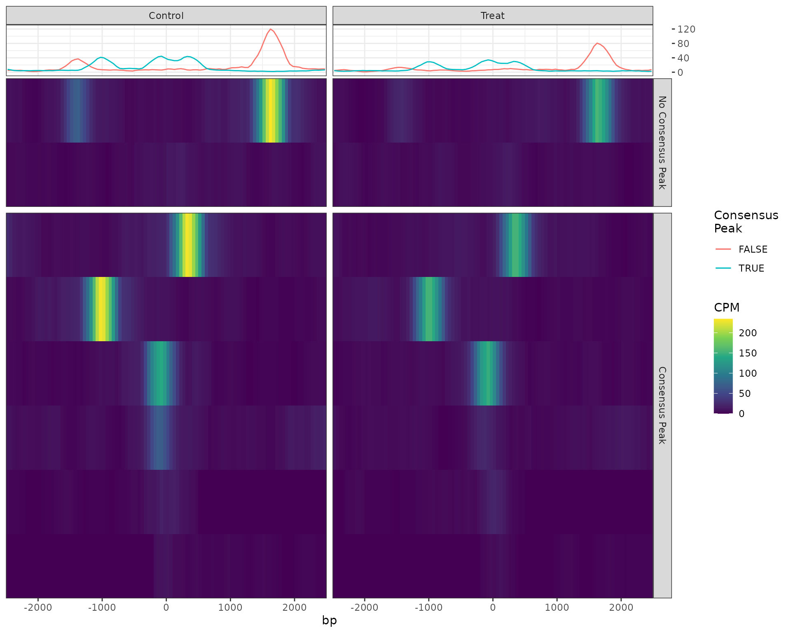
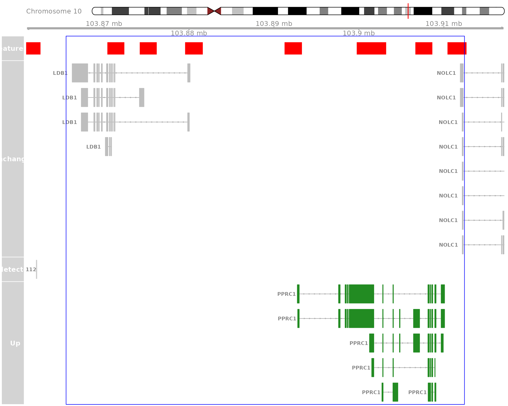

vignettes/differential_binding.Rmd
differential_binding.RmdThe GRAVI workflow, for which this package is designed, uses sliding windows for differential binding analysis in a manner similar to the package csaw, but also incorporating macs2 peaks. The workflow itself extends to integrating multiple IP targets and external data sources, and as such, this package introduces a handful of functions to enable these analyses.
The majority of examples below use extremely simplified datasets to provide general guidance on using the functions. Some results may appear trivial as a result, but will hopefully prove far more useful in a true experimental context.
The starting point for differential binding analysis using sliding windows is to define windows, then count reads within each window using the bam files. Commonly one or IP input/control samples is also produced during a ChIP-Seq experiment. The example files provided here contain a small subset of reads from chromosome 10 across two experimental and one input sample.
The approach taken below is to define a set of sliding windows, using the capabilities of csaw, but to then use macs peaks to define regions of most likely signal. First we can define our windows and count the alignments using existing tools. In the following, we’ll use a sliding window of 180bp and a step size of 60bp, meaning each nucleotide is covered by 3 windows.
library(tidyverse)
library(Rsamtools)
library(csaw)
library(BiocParallel)
library(rtracklayer)
bfl <- system.file(
"extdata", "bam", c("ex1.bam", "ex2.bam", "input.bam"), package = "extraChIPs"
) %>%
BamFileList()
names(bfl) <- c("ex1", "ex2", "input")
rp <- readParam(
pe = "none",
dedup = TRUE,
restrict = "chr10"
)
wincounts <- windowCounts(
bam.files = bfl,
spacing = 60,
width = 180,
ext = 200,
filter = 1,
param = rp,
BPPARAM = bpparam()
)This produces a RangesSummarizedExperiment with windows included which passed the minimum threshold of 1 total read. As we’ve only counted reads within a very small window, the complete library sizes will be highly inaccurate. The true library sizes can be added here noting that this step is not normally required, but given these values are essential for accurate CPM values, they will be added here.
wincounts$totals <- c(964076L, 989543L, 1172179L)We can also add some key information to the colData element of this object, which will also be propagated to all downstream objects.
wincounts$sample <- colnames(wincounts)
wincounts$treat <- as.factor(c("ctrl", "treat", NA))
colData(wincounts)## DataFrame with 3 rows and 6 columns
## bam.files totals ext rlen sample treat
## <character> <integer> <integer> <integer> <character> <factor>
## ex1 /tmp/Rtmps0u37i/temp.. 964076 200 73 ex1 ctrl
## ex2 /tmp/Rtmps0u37i/temp.. 989543 200 74 ex2 treat
## input /tmp/Rtmps0u37i/temp.. 1172179 200 74 input NAA density plot can be simply drawn of these counts, with the vast majority of windows receiving very low counts, due to the nature of transcription factor binding, where long stretches are unbound. The windows with higher counts tend to be associated with the samples targeting a transcription factor (TF), as seen in the two treatment group samples.
library(extraChIPs)
plotAssayDensities(wincounts, colour = "treat", trans = "log1p")
After counting all reads in the sliding windows, the next step is to discard windows for which counts are unlikely to represent TF binding. The package extraChIPs uses a set of consensus peaks to automatically set a threshold based on 1) counts strongly above the counts from the input sample, and 2) the windows with the overall highest signal. Thresholds are determined such that q = 0.5 of the retained windows overlap on of the supplied consensus peaks. Higher values for q will return more windows, however many of these will tend to only marginally overlap a peak. Experience has shown that values such as q = 0.5 tend to return a considerable proportion of windows containing true TF binding signal.
First we can load the peaks, supplied here as a simple bed file.
peaks <- import.bed(
system.file("extdata", "peaks.bed.gz", package = "extraChIPs")
)
peaks <- granges(peaks)The we can pass these to the function dualFilter() which utilises the strategy described above. On large datasets, this can be quite time-consuming, as can the initial counting step. Due to the small example dataset, a more inclusive threshold for q will be used here.
filtcounts <- dualFilter(
x = wincounts[, !is.na(wincounts$treat)],
bg = wincounts[, is.na(wincounts$treat)],
ref = peaks,
q = 0.8 # Better to use q = 0.5 on real data
)The returned object will by default contain counts and logCPM assays, with the complete library sizes used for the calculation of logCPM values.
plotAssayDensities(filtcounts, assay = "logCPM", colour = "treat")
plotAssayPCA(filtcounts, assay = "logCPM", colour = "treat", label = "sample")
Whilst the initial set of counts contained 595 windows, these have now been reduced to 97 windows. Similarly, the input sample is no longer included in the data object.
dim(wincounts)## [1] 595 3
dim(filtcounts)## [1] 97 2The rowData element of the returned object will contain a logical column indicating where each specific retained window overlapped one of the supplied consensus peaks.
rowRanges(filtcounts)## GRanges object with 97 ranges and 1 metadata column:
## seqnames ranges strand | overlaps_ref
## <Rle> <IRanges> <Rle> | <logical>
## [1] chr10 103865521-103865700 * | TRUE
## [2] chr10 103865581-103865760 * | TRUE
## [3] chr10 103865641-103865820 * | TRUE
## [4] chr10 103865701-103865880 * | TRUE
## [5] chr10 103874161-103874340 * | FALSE
## ... ... ... ... . ...
## [93] chr10 103900141-103900320 * | TRUE
## [94] chr10 103900201-103900380 * | TRUE
## [95] chr10 103900261-103900440 * | TRUE
## [96] chr10 103900321-103900500 * | TRUE
## [97] chr10 103900381-103900560 * | TRUE
## -------
## seqinfo: 1 sequence from an unspecified genome## [1] 0.8247423Multiple approaches are available for analysis of differential binding, and given the small example dataset, only a brief example of conventional results will be used. extraChIPs does provide a simple coercion function to covert logCPM to a voom object, which requires the relationship between library sizes and logCPM values to be intact. Whist this will not be discussed further here should this be a viable approach for an analysis, the following code may prove helpful.
v <- voomWeightsFromCPM(
cpm = assay(filtcounts, "logCPM"),
lib.size = filtcounts$totals,
isLogCPM = TRUE
)After an analysis has been performed, common values contained in the output may be estimated signal (logCPM), estimated change (logFC) with both raw and adjusted p-values. Given the dependency of neighbouring windows, any adjusted p-values will not be appropriate and a merging of overlapping windows will be performed.
For our example dataset we’ll add these manually, however this is just for demonstration purposes for the eventual merging of windows.
rowRanges(filtcounts)$logCPM <- rowMeans(assay(filtcounts,"logCPM"))
rowRanges(filtcounts)$logFC <- rowDiffs(assay(filtcounts,"logCPM"))[,1]
rowRanges(filtcounts)$PValue <- 1 - pchisq(rowRanges(filtcounts)$logFC^2, 1)Now we have some example values, we can merge any overlapping windows using mergeByCol(). During this process, overlapping ranges are merged into a single range with representative values taken from one of te initial sliding windows. The recommended approach for retaining statistical independence between windows is to choose the window with the largest signal as representative of the entire merged window.
res_gr <- mergeByCol(filtcounts, col = "logCPM", pval = "PValue")
res_gr$overlaps_ref <- overlapsAny(res_gr, peaks)A GRanges object is returned with representative values for each merged window. The mcol keyval_range provides the original range from which the representative values were taken. A column with adjusted p-values will also be added if p_adj_method is not set to “none”.
bwfl <- system.file(
"extdata", "bigwig", c("ex1.bw", "ex2.bw"), package = "extraChIPs"
) %>%
BigWigFileList() %>%
setNames(c("ex1", "ex2"))
pd <- getProfileData(bwfl, res_gr)
plotProfileHeatmap(
pd, "profile_data",
facetY = "overlaps_ref",
labeller = as_labeller(
c(
"TRUE" = "Consensus Peak", "FALSE" = "No Consensus Peak",
"ex1" = "Control", "ex2" = "Treat"
)
)
) +
scale_fill_viridis_c() +
labs(colour = "Consensus\nPeak", fill = "CPM") +
theme_bw()
data("grch37.cytobands")
data("ex_genes")
plotHFGC(
gr = range(res_gr),
features = GRangesList(macs2 = peaks),
featcol = c(macs2 = "blue"),
genes = ex_genes,
genecol = list(Unchanged = "grey", Up = "green"),
coverage = bwfl,
linecol = c(ex1 = "black", ex2 = "forestgreen"),
annotation = GRangesList(window = granges(res_gr)),
annotcol = c(window = "red"),
cytobands = grch37.cytobands,
title.width = 1.5, rotation.title = 90,
collapseTranscripts = FALSE
)